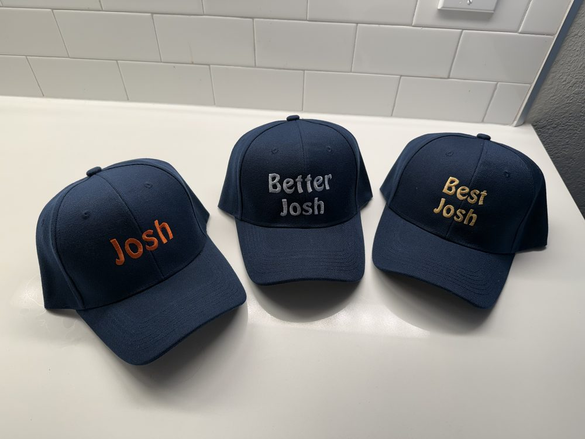
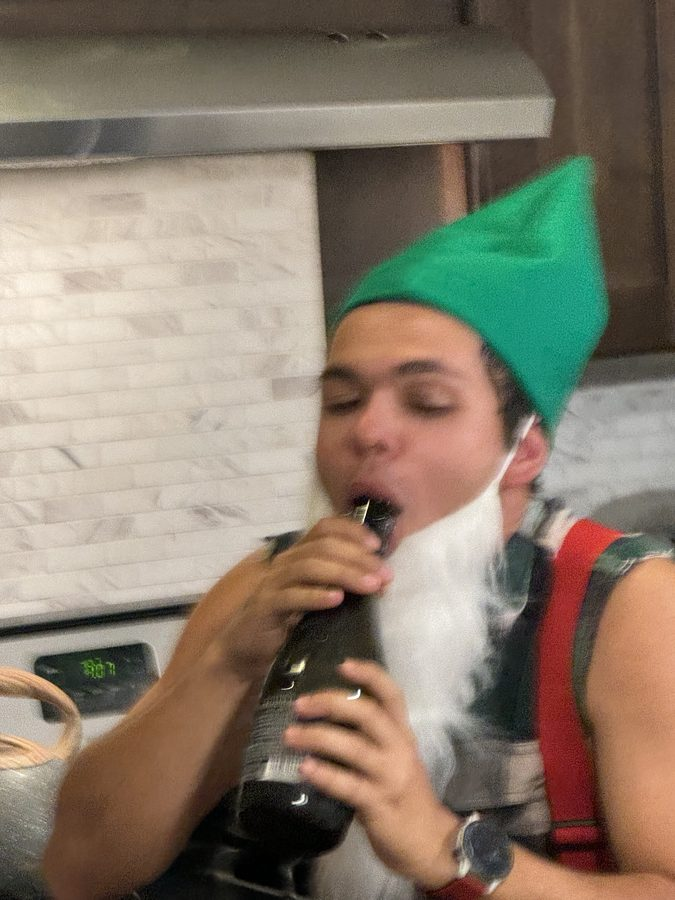

- SEP 4 The Commissioner docks Josh M. 10 votes for failing to wear the Better Josh hat on the night out in Boulder. The hat is the covenant.
- SEP 4 The Commissioner docks Josh M. 5 votes for attempting to vote for himself.
- SEP 4 The Commissioner grants Josh M. 10 votes for sinking a 70-foot birdie putt.
- SEP 4 David grants Josh M. 5 votes for ripping the penjamin.
- SEP 4 Atharva grants Josh M. 5 votes for ripping the penjamin.
- SEP 4 The Commissioner grants Josh S. 5 votes for out-driving Josh M. (80 yards vs. 75 yards).
- SEP 2 The Commissioner restores Josh S.'s 10 forfeited votes upon his agreement to compete Friday at Fossil Trace after seeing the errors of his ways.
- SEP 2 The Commissioner deducts 10 votes from Josh S. for refusing to compete in the first golf round, thereby functionally conceding a first round of 120.
- AUG 29 The Commissioner grants Josh R. 10 votes for attempting to drive the 9th green at Corica North in the warm-up round (he lost the ball).
- AUG 25 The Commissioner grants Josh S. 20 votes for saving the group $700 on car rentals.
| Event | Josh S."JOSH" | Josh M."BETTER JOSH" | Josh R."BEST JOSH" |
|---|---|---|---|
| 36-Hole GrossFri Fossil Trace + Sun Colorado National, combined strokes · low total wins · dark = actual, gray = handicap projection | 108 + 1201.0 pts | 91 + 962.0 pts | 82 + 753.0 pts |
| Fastest LapSat · K1 Speed · single best lap of the day, any heat · first event to lock | –2.0 pts | –2.0 pts | –2.0 pts |
| Biggest FishSat · Cherry Creek · longest catch · fallback: first fish → boat-energy vote | –2.0 pts | –2.0 pts | –2.0 pts |
| Ticket HaulSun · D&B · most tickets, full stop — spend whatever you want, this one's pay-to-win · receipts or it didn't happen | –2.0 pts | –2.0 pts | –2.0 pts |
| The People's JoshOngoing all weekend · non-Joshes cast + re-cast votes with the Commissioner anytime · normalized to 3/2/1 when polls close Mon noon | 25 votes3.0 pts | 5 votes1.0 pts | 10 votes2.0 pts |
| LOCKED TOTALcompleted events only — this is what's real | 0— | 0— | 0— |
| HYPOTHETICALif it ended right now — golf per handicaps, unplayed events split 2/2/2, ties share points | 10.02ND · BETTER JOSH | 9.03RD · JOSH | 11.01ST · BEST JOSH |
- Every event scores 3 / 2 / 1 — nobody leaves an event with zero, everybody leaves an event behind somebody.
- Golf is one event: both rounds, gross strokes, summed. Best Josh's whole reputation is worth exactly 20% of the pot. Prove it elsewhere.
- Fishing fallback chain: biggest fish → first fish → boat-energy vote by the group. The walleye owe no Josh anything.
- The People's Josh is a rolling vote: any non-Josh can cast — or change — their vote with the Commissioner at any point in the weekend. A great send earns votes; a bad Saturday loses them. Raw votes are normalized to 3/2/1 when polls close at Monday noon, so no Josh is safe at any hour.
- Tiebreaker: at Commissioner's discretion.
- Awards ceremony: Monday, 12:00 PM sharp at the RiNo rally point — before anyone leaves for flights. Standings are final when read aloud.
- Stakes: final standings re-rank the names permanently — for life. Winner is Best Josh. Second is Better Josh. Third is simply Josh. There are no rematches, no appeals, no future tournaments. The board does not negotiate.
- Board admin: results and People's Josh votes go to Deven, and only the Commissioner's office updates this page. Running vote counts may be teased or withheld at the Commissioner's discretion. No self-reporting, no revisionism.

- Every morning at breakfast, the Commissioner reads the current standings aloud. Each Josh is then issued the hat matching his rank at that moment.
- The hat is worn for the entirety of the day — the tee box, the boat, the biergarten, the arcade. All of it.
- Hats change hands only at the morning reading. Surge all you want at 2 PM; you still wear yesterday's truth until sunrise.
- Thursday night: hats issued on arrival per the standings as they exist that evening.
- Refusing the hat is a People's Josh offense — votes docked at the Commissioner's discretion. The hat is the covenant.

Ian
Ian, pictured in his natural habitat. Subject is to be married next May to Meg, who was present for this photograph and proceeded with the engagement anyway — a testament to her judgment or her patience, likely both. The following four days are held in his honor.
- 4:00 PMHouse opens — self check-in, smart lockArtist Getaway · 6745 W 97th Pl, Westminster · conf HM38TXM2BKROLLING
- EVENINGCrew trickles in — drop flight times in the group chat for airport poolingHouse is ~35 min from DENEVERYONE
- 10:08 PMDeven lands — UA2436 from SFO · K45V4DAvis SUV pickup at DEN — conf 23585520US0 · booked by Josh S.DEVEN
- 11:00 PMLast wave at the house — beers, room draft, Friday briefingReminder: 6 AM alarm is real. Hydrate.EVERYONE
- 6:00 AMWake up — Fossil Trace day, whole house rollsCoffee, bananas, no dawdling — that means the riders tooEVERYONE
- 6:40 AMDepart for Golden — 3 cars~25 min · 3050 Illinois St, Golden · 8 playing ($175), non-golfers riding along ($50) — carts, heckling, and beers count as participationEVERYONE
- 7:05 AMCheck in at the Fossil Trace golf shop, warm upPay at the shop · carts path-only (drought) · shop (303) 277-8750GOLF ×8
- 7:30 AMTee group 1 · 4308841) Ian 2) Atharva 3) Josh R. 4) ThomasFULL
- 7:40 AMTee group 2 · 4308831) Deven 2) Josh M. 3) David 4) Josh S.FULL
- 12:45 PMRounds wrap — lunch + a beer in Golden, full crewScorecards audited, Josh golf standings noted by the CommissionerEVERYONE
- 2:00 PMGrocery run — ~1 hour holding slotWeekend provisions: breakfasts, cooler stock, snacks · rest of the crew heads to the houseDEVEN +VOLS
- 3:00 PMBack at the house — unload, pool, nap, shower windowYou will want the napEVERYONE
- 4:15 PMUbers to Boulder — don't be late, we have a table~30–40 min · order 3 XLs from the house · nobody drives, everybody drinksEVERYONE
- 5:00 PMBohemian Biergarten — reservation for 202017 13th St, one block off Pearl · liters, brats, and beer boots · Boulder locals joining us — hence the big table · (720) 328-8328EVERYONE +LOCALS
- ~7:30 PMSpill out onto Pearl Street — bar crawl with the expanded crewEVERYONE +LOCALS
- LATEUbers home whenever the night dictatesRoll back in waves — budget ~$40–50/XL each wayEVERYONE
Fossil Trace fine print: nothing is charged until check-in; cancel any unused spots at least 20 hours ahead or the card on file eats a no-show fee.
- MORNINGNothing. On purpose.Sleep in, recover from Boulder, greasy breakfast at the houseEVERYONE
- 12:05 PMDepart for K1 — with EVERYTHING for the day~20 min · 16059 Grant St, Thornton · we are NOT coming back to the house — swim gear, towels, empty cooler, layers all in the cars nowEVERYONE
- 12:30 PMArrive K1 — check in, waivers, driver briefing$80/racer · arrival time per the booking, don't be the guy who misses gridEVERYONE
- 1:00 PMK1 Speed — go-kart racing ✓ CONFIRMEDGrand prix format for 10 = automatic bragging rights table · fastest single lap feeds the Josh OpenEVERYONE
- 3:05 PMRacing wraps — convoy rolls south toward Cherry CreekChange into boat clothes at K1 before leavingEVERYONE
- 3:20 PMStore run — boat drinks, snacks, iceKing Soopers or Target off I-25 en route · cans and plastic only, NO GLASS on the boat · fill the coolerEVERYONE
- 3:55 PMRoll out from the store — last leg to the dock~35 min · Cherry Creek State Park west boat ramp, enter off S. Dayton St · park entry fee per carEVERYONE
- 4:45 PMMeet the crew at the walking path overlooking the waterWest boat ramp just south of the marina — park west of the marina, walk southEVERYONE
- 5:00 PMDenver Charter Fishing — private sunset cruise4 hours · targeting walleye, plus trout & carp if they show · swimming OK (life jackets) · drinks OK, no glassEVERYONE
- 9:00 PMBack at the dock — late dinner on the drive homeCaptain: Ilan Reissner · 303-358-5941EVERYONE
Licenses: anyone actually fishing needs a Colorado fishing license — buy ahead at cpwshop.com, takes 5 minutes. Ilan provides all gear. Bring: sunglasses, sunscreen, layers, snacks, bug spray. Carpool hard — dock parking is limited on weekends and every car pays park entry.
- 7:45 AMWake up — golf day, 8 playingProper breakfast at the house · non-golfers: sleep in or come heckle, your callGOLF ×8+
- 8:25 AMDepart for Erie — 2 cars~25 min · 2700 Vista Pkwy, ErieGOLF ×8+
- 8:54 AMArrive Colorado National — 1 hour before first teeCheck in, range balls, putting green, breakfast sandwich · $123/player due at the course · (303) 926-1723EVERYONE
- 9:54 AMTee group 1 · 4269440881) Josh R. 2) Josh M. 3) Brady (golf guest) 4) AtharvaFULL
- 10:03 AMTee group 2 · 4269440951) Ian 2) Deven 3) John 4) ThomasFULL
- 10:12 AMTee group 3 · 4269441061) Josh S. 2) David 3) Cramer (golf guest)All 11 spots filled — reminder: no walking Sun (carts included) · no denim, collared shirts requiredFULL
- 3:00 PMRounds wrap — clubhouse beer, settle the money gamesFront Range views, take the photos hereEVERYONE
- 4:00 PMBack at the house — shower, regroupEVERYONE
- 6:00 PMDave & Buster's Westminster — dinner, games, last-night sends5 min from the house · 10667 Westminster Blvd · open till midnight · Josh Open tiebreaker venueEVERYONE
- 8:30 AMWake, pack, sweep the houseTrash out, dishes run, keys in the lockboxEVERYONE
- 10:00 AMCheckout — hard deadlineConvoy heads into Denver proper (~25 min)EVERYONE
- 10:30 AMDenver day — open format, no scheduleIdeas: RiNo food trucks + breweries (Ratio opens noon, Odell at 2 — River North closed Mondays) · Larimer Square wander · Union Station bars · pool hall if Deven finds a tableEVERYONE
- 12:00 PMThe Josh Open Awards Ceremony — RiNo rally pointPeople's Josh polls close + votes normalized · final tally read aloud · renaming ritual performed · new Best Josh crowned, new Josh consoled · toast to Ian, who made all this possible — before anyone peels off for flightsEVERYONE
- 12:30 PMLunch + last rounds together — RiNo food trucks & breweriesScatter as flights require from hereEVERYONE
- 5:45 PMRoll to DEN — drop-offs staggered by flight timeEVERYONE
- 7:00 PMAvis SUV returnedReturn lanes at DEN — keys per drop-off instructionsDEVEN +CAR
- 9:09 PMDeven departs — UA2123 to SFO, lands 10:55 PMEveryone else: safe travels, hydrate, text the chat when you landDEVEN
Tap any pin to open it in Google Maps for live directions. Cherry Creek is the far-flung one — southeast across the metro, ~40–45 min from the house. Everything else sits within 30 minutes of base camp.
The Damage (group costs)
| Airbnb · 4 nights | $3,851.21 |
| SUV rental · Thu–Mon (Avis, via Josh S. 🏆) | $525.01 |
| Colorado National · per golfer | $123.00 |
| Fossil Trace · per golfer / per rider | $175 / $50 |
| Groceries · Fri run | split |
| Applebee's lunch · Fri 9/4 | $300.00 |
| Breakfast burritos · Sat 9/5 | $150.00 |
| K1 Speed · per racer | $80 |
| Food + drinks out · Boulder, D&B, Denver | ~$250–350/pp |
| Saturday's boat | on Deven 🎣 |
| Estimated all-in per person · excl. flights | ~$1,050–1,300 |
Rough per-person math: Airbnb ~$350 + SUV ~$48 + Sunday golf $123 + Fossil Trace $175 (golfers; riders $50) + K1 $80 + groceries + food/drinks out. Friday riders save $125 vs. playing.
JOIN THE TRIP SPLITWISE →All shared costs run through Splitwise — join above, settle at the end. Airbnb hits Deven's card Aug 21; it'll be in there.
Before We Fly
- Waivers — every boat rider signs. Deven forwards the guest portal link, everyone completes pre-trip tasks before 9/5.
- K1 is confirmed ✓ — create your K1 Speed racer profile online ahead of time to skip the kiosk queue Saturday.
- Fishing licenses for anyone wetting a line Saturday (buy ahead at cpwshop.com).
- Sunday golf: all 11 spots filled ✓ (incl. guests Cramer + Brady, paying their own $123). Rental sets: confirm count with the shop (303-926-1723). Dress code: no denim, collared shirts.
- Brief the Joshes. Rules go out before the trip — no Josh may claim ignorance of the standings.
- Boulder dinner is booked ✓ — Bohemian Biergarten, Fri 5:00 PM, table for 20 (locals joining).
- Join the Splitwise + flight details to the group chat for airport carpools.
- Airbnb free cancellation ends Aug 29, 4:00 PM (not that we're cancelling).